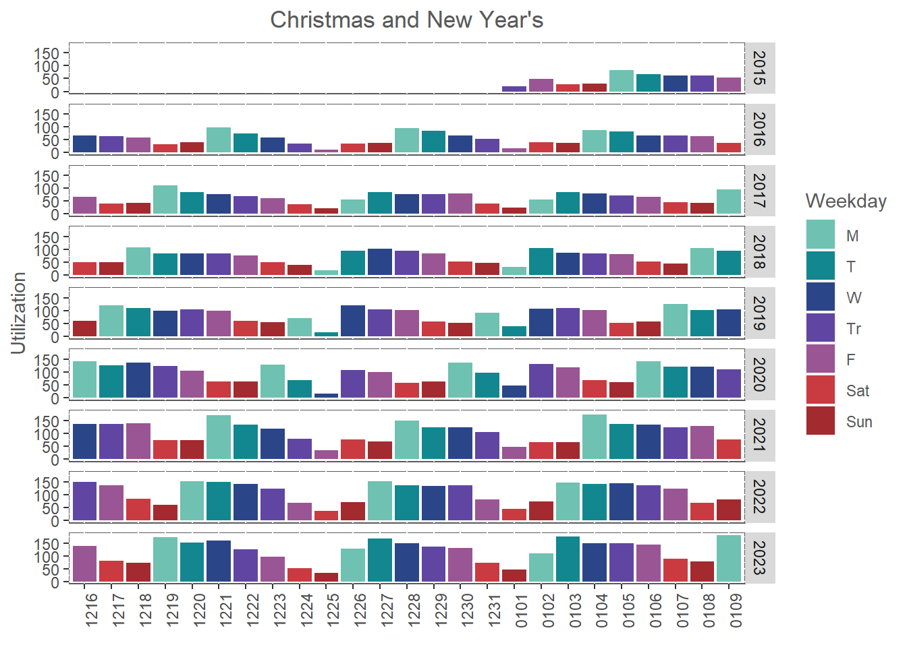
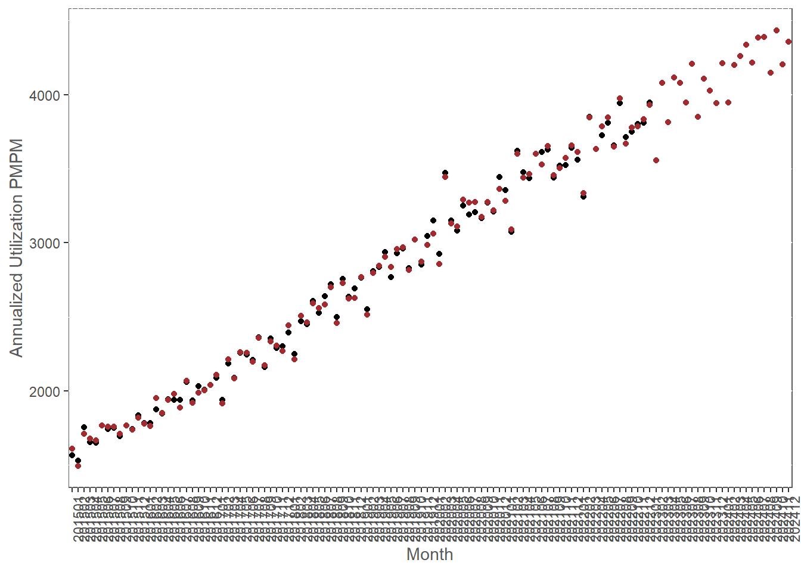
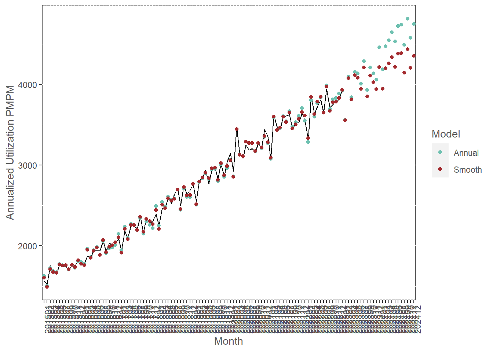

Chapter 2 Utilization Forecasting
2.1 Introduction
One of the key use cases for GAMs in my work is in utilization forecasting. In this case study, I will walk through how I do so using a particular example drug.
2.2 Data
The data we will use is a table of daily utilization according to an unspecified metric for an unspecified drug.
dat <- fread(
file = file.path('data', 'rx_data.csv'),
colClasses = c(ds = 'Date')
)
ggplot(dat) +
geom_line(aes(ds, y)) +
labs(
x = element_blank(),
y = 'Utilization'
) +
mytheme2.3 Predictors
2.3.1 Weekday
The first and largest source of variation is due to the day of the week.
dat[
,
wkdy := factor(
strftime(ds, '%u'),
levels = as.character(1:7),
labels = c('M', 'T', 'W', 'Tr', 'F', 'Sat', 'Sun')
)
]
ggplot(dat) +
geom_boxplot(aes(wkdy, y)) +
labs(
x = element_blank(),
y = 'Utilization'
) +
mytheme
2.3.2 In-year
The next source of variation is the time of year. A phenomenon called induced utilization is almost always present in health claims, where members are more likely to seek care later in the year as their deductible gets used up. Some drugs display other effects, as well, like flu treatments, which spike in Winter, and immunizations, which spike in Fall before the school year starts.
dat[
,
yr := year(ds)
][
,
yrfrac := as.numeric(strftime(ds, '%j'))
][
,
yrfrac := yrfrac / max(yrfrac)
]
ggplot(dat, aes(yrfrac, y)) +
geom_hline(yintercept = 90, linetype = 'dashed') +
geom_point() +
geom_smooth() +
labs(
x = 'Proportion of Year Completed',
y = 'Utilization'
) +
mytheme## `geom_smooth()` using method = 'gam' and formula = 'y ~ s(x, bs = "cs")'2.3.3 Holidays
We will cover a more rigorous method for selecting a holiday list in the next section. For now, we will just use the “big six.” Just using this holiday list usually will get you most of the way there. With some insured populations, however, days outside the list of U.S. federal holidays need to be accounted for. In addition, billing practices can cause spikes on days like the first of the month.
lbls <- c(paste0(12, 16:31), paste0('01', 0, 1:9))
pdat <- dat[
,
.(day = strftime(ds, '%m%d'), yr = year(ds) + (month(ds) == 12),
wkdy, y)
][
.(lbls),
on = 'day'
][
,
`:=`(
yr = factor(yr),
day = factor(day, levels = lbls)
)
]
ggplot(pdat) +
geom_bar(
aes(day, y, group = wkdy, fill = wkdy),
stat = 'identity'
) +
facet_grid(yr ~.) +
scale_discrete_optum('fill') +
labs(
title = 'Christmas and New Year\'s',
x = element_blank(),
y = 'Utilization',
fill = 'Weekday'
) +
mytheme +
theme_rotx
ny <- dat[month(ds) == 1 & mday(ds) == 1, .(ds, hol = 'New Year')]
mem <- dat[
month(ds) == 5 &
as.character(wkdy) == 'M',
.(ds = tail(ds, 1), hol = 'Memorial Day'),
by = .(yr)
][
,
yr := NULL
]
indep <- dat[
month(ds) == 7 &
mday(ds) == 4,
.(ds, hol = 'Independence Day')]
labor <- dat[
month(ds) == 9 &
as.character(wkdy) == 'M',
.(ds = head(ds, 1), hol = 'Labor Day'),
by = .(yr)
][
,
yr := NULL
]
thnks <- dat[
month(ds) == 11 &
as.character(wkdy) == 'Tr'
][
,
i := seq_len(.N),
by = .(yr)
][
i == 4,
.(ds, hol = 'Thanksgiving')
]
xmas <- dat[
month(ds) == 12 &
mday(ds) == 25,
.(ds, hol = 'Christmas')
]
hols <- rbind(
ny,
mem,
indep,
labor,
thnks,
xmas
)
dat <- hols[dat, on = 'ds']
dat[is.na(hol), hol := 'none']
dat[, hol := relevel(factor(hol), ref = 'none')]
dat[]## ds hol y wkdy yr yrfrac
## 1: 2015-01-01 New Year 20.35787 Tr 2015 0.002732240
## 2: 2015-01-02 none 49.75367 F 2015 0.005464481
## 3: 2015-01-03 none 28.11368 Sat 2015 0.008196721
## 4: 2015-01-04 none 30.62088 Sun 2015 0.010928962
## 5: 2015-01-05 none 83.43423 M 2015 0.013661202
## ---
## 2949: 2023-01-27 none 132.02780 F 2023 0.073770492
## 2950: 2023-01-28 none 74.57140 Sat 2023 0.076502732
## 2951: 2023-01-29 none 69.18019 Sun 2023 0.079234973
## 2952: 2023-01-30 none 175.67447 M 2023 0.081967213
## 2953: 2023-01-31 none 156.08502 T 2023 0.0846994542.3.4 COVID
The most common impact to the Pharmacy line of business is actually a large spike in utilization at the start of lockdowns. This occurred at UHC, at least, because we removed several restrictions designed to prevent stockpiling and other forms of overutilization so that members could stock up on the medicines they need in the face of the very uncertain short-term future at the time.
ggplot(dat) +
geom_line(aes(ds, y)) +
coord_cartesian(xlim = as.Date(c('2020-3-1', '2020-3-31'))) +
labs(
x = element_blank(),
y = 'Utilization'
) +
mytheme
dat[, covid := 0L]
dat[
strftime(ds, '%Y%m') == '202003',
covid := .I
]
dat[]## ds hol y wkdy yr yrfrac covid
## 1: 2015-01-01 New Year 20.35787 Tr 2015 0.002732240 0
## 2: 2015-01-02 none 49.75367 F 2015 0.005464481 0
## 3: 2015-01-03 none 28.11368 Sat 2015 0.008196721 0
## 4: 2015-01-04 none 30.62088 Sun 2015 0.010928962 0
## 5: 2015-01-05 none 83.43423 M 2015 0.013661202 0
## ---
## 2949: 2023-01-27 none 132.02780 F 2023 0.073770492 0
## 2950: 2023-01-28 none 74.57140 Sat 2023 0.076502732 0
## 2951: 2023-01-29 none 69.18019 Sun 2023 0.079234973 0
## 2952: 2023-01-30 none 175.67447 M 2023 0.081967213 0
## 2953: 2023-01-31 none 156.08502 T 2023 0.084699454 02.3.5 Trend
dat[, t := .I]
dat[]## ds hol y wkdy yr yrfrac covid t
## 1: 2015-01-01 New Year 20.35787 Tr 2015 0.002732240 0 1
## 2: 2015-01-02 none 49.75367 F 2015 0.005464481 0 2
## 3: 2015-01-03 none 28.11368 Sat 2015 0.008196721 0 3
## 4: 2015-01-04 none 30.62088 Sun 2015 0.010928962 0 4
## 5: 2015-01-05 none 83.43423 M 2015 0.013661202 0 5
## ---
## 2949: 2023-01-27 none 132.02780 F 2023 0.073770492 0 2949
## 2950: 2023-01-28 none 74.57140 Sat 2023 0.076502732 0 2950
## 2951: 2023-01-29 none 69.18019 Sun 2023 0.079234973 0 2951
## 2952: 2023-01-30 none 175.67447 M 2023 0.081967213 0 2952
## 2953: 2023-01-31 none 156.08502 T 2023 0.084699454 0 29532.4 Model Fitting
m <- gam(
y ~ s(t) + s(yrfrac) + s(covid) + wkdy + hol,
family = gaussian(link = 'log'),
data = dat
)
summary(m)##
## Family: gaussian
## Link function: log
##
## Formula:
## y ~ s(t) + s(yrfrac) + s(covid) + wkdy + hol
##
## Parametric coefficients:
## Estimate Std. Error t value Pr(>|t|)
## (Intercept) 4.759475 0.002884 1650.54 <2e-16 ***
## wkdyT -0.109329 0.004116 -26.56 <2e-16 ***
## wkdyW -0.144918 0.004204 -34.47 <2e-16 ***
## wkdyTr -0.183170 0.004319 -42.41 <2e-16 ***
## wkdyF -0.274914 0.004542 -60.52 <2e-16 ***
## wkdySat -0.785000 0.006598 -118.98 <2e-16 ***
## wkdySun -0.842564 0.006926 -121.65 <2e-16 ***
## holChristmas -1.365148 0.110336 -12.37 <2e-16 ***
## holIndependence Day -0.945942 0.065771 -14.38 <2e-16 ***
## holLabor Day -0.948133 0.050228 -18.88 <2e-16 ***
## holMemorial Day -0.968767 0.051515 -18.81 <2e-16 ***
## holNew Year -0.890186 0.064132 -13.88 <2e-16 ***
## holThanksgiving -1.276025 0.080959 -15.76 <2e-16 ***
## ---
## Signif. codes: 0 '***' 0.001 '**' 0.01 '*' 0.05 '.' 0.1 ' ' 1
##
## Approximate significance of smooth terms:
## edf Ref.df F p-value
## s(t) 6.053 7.191 4110.09 <2e-16 ***
## s(yrfrac) 8.916 8.998 14.34 <2e-16 ***
## s(covid) 6.367 7.450 14.98 <2e-16 ***
## ---
## Signif. codes: 0 '***' 0.001 '**' 0.01 '*' 0.05 '.' 0.1 ' ' 1
##
## R-sq.(adj) = 0.962 Deviance explained = 96.2%
## GCV = 48.978 Scale est. = 48.408 n = 2953plot(m, pages = 1)Although the in-year term is statistically significant, it is not a likely shape, so I am concerned that it is overfitting the training data.
Right now, we have the luxury of trying out alternative model forms, but in production I would likely just leave it alone because it will contribute very little to forecasts.
The help page for s() (?s in the console) directs us to a help page for smooth.terms, which contains a list of different options to use.
We see that by specifying bs = 'ts', we can apply a stricter penalty to the spline to yield a smoother–potentially even null–estimate.
m <- gam(
y ~ s(t) + s(yrfrac, bs = 'ts') + s(covid) + wkdy + hol,
family = gaussian(link = 'log'),
data = dat
)
summary(m)##
## Family: gaussian
## Link function: log
##
## Formula:
## y ~ s(t) + s(yrfrac, bs = "ts") + s(covid) + wkdy + hol
##
## Parametric coefficients:
## Estimate Std. Error t value Pr(>|t|)
## (Intercept) 4.759475 0.002884 1650.54 <2e-16 ***
## wkdyT -0.109329 0.004116 -26.56 <2e-16 ***
## wkdyW -0.144918 0.004204 -34.47 <2e-16 ***
## wkdyTr -0.183170 0.004319 -42.41 <2e-16 ***
## wkdyF -0.274914 0.004542 -60.52 <2e-16 ***
## wkdySat -0.785000 0.006598 -118.98 <2e-16 ***
## wkdySun -0.842564 0.006926 -121.65 <2e-16 ***
## holChristmas -1.365150 0.110336 -12.37 <2e-16 ***
## holIndependence Day -0.945942 0.065771 -14.38 <2e-16 ***
## holLabor Day -0.948133 0.050228 -18.88 <2e-16 ***
## holMemorial Day -0.968767 0.051515 -18.81 <2e-16 ***
## holNew Year -0.890185 0.064132 -13.88 <2e-16 ***
## holThanksgiving -1.276024 0.080959 -15.76 <2e-16 ***
## ---
## Signif. codes: 0 '***' 0.001 '**' 0.01 '*' 0.05 '.' 0.1 ' ' 1
##
## Approximate significance of smooth terms:
## edf Ref.df F p-value
## s(t) 6.053 7.191 4110.09 <2e-16 ***
## s(yrfrac) 8.916 9.000 14.32 <2e-16 ***
## s(covid) 6.367 7.450 14.98 <2e-16 ***
## ---
## Signif. codes: 0 '***' 0.001 '**' 0.01 '*' 0.05 '.' 0.1 ' ' 1
##
## R-sq.(adj) = 0.962 Deviance explained = 96.2%
## GCV = 48.978 Scale est. = 48.408 n = 2953plot(m, pages = 1)It turns out that the estimate is robust to the extra penalty. Perhaps there is some residual month-specific variation that the weekday and holiday components aren’t capturing by themselves. It could also be that overall trend is masking the true in-year variation. We’ll leave it alone but try another way to forecast this drug a little later.
2.5 Making Predictions
# all dates we want predictions for
testset <- data.table(
ds = seq(from = dat[, min(ds)], to = as.Date('2024-12-31'), by = 1)
)
# add historicals
testset <- dat[, .(ds, y)][testset, on = 'ds']
# redo date processing
testset[
,
`:=`(
t = .I,
yr = year(ds),
yrfrac = as.numeric(strftime(ds, '%j')),
covid = 0L,
wkdy = factor(
strftime(ds, '%u'),
labels = c('M', 'T', 'W' ,'Tr', 'F', 'Sat', 'Sun')
)
)
][
,
yrfrac := yrfrac / max(yrfrac),
by = .(yr)
][
strftime(ds, '%Y%m') == '202003',
covid := .I
]
# holidays
## there are more efficient ways to do this, but they required more advanced coding outside the
## scope of this module
hols <- rbind(
hols,
data.table(ds = as.Date('2024-1-1'), hol = 'New Year'),
data.table(
ds = as.Date(c('2023-5-29', '2024-5-27')),
hol = 'Memorial Day'
),
data.table(
ds = as.Date(c('2023-7-4', '2024-7-4')),
hol = 'Independence Day'
),
data.table(
ds = as.Date(c('2023-9-4', '2024-9-2')),
hol = 'Labor Day'
),
data.table(
ds = as.Date(c('2023-11-23', '2024-11-28')),
hol = 'Thanksgiving'
),
data.table(
ds = as.Date(c('2023-12-25', '2024-12-25')),
hol = 'Christmas'
)
)
testset <- hols[testset, on = 'ds']
testset[is.na(hol), hol := 'none']
testset[, hol := relevel(factor(hol), ref = 'none')]
# predictions
testset[
,
yhat := as.vector(predict(m, newdata = testset, type = 'response'))
]
pdat <- testset[
,
lapply(.SD, sum),
by = .(yrmo = strftime(ds, '%Y%m')),
.SDcols = c('y', 'yhat')
]
ggplot(pdat, aes(x = factor(yrmo))) +
geom_point(aes(y = y)) +
geom_point(aes(y = yhat), color = colors$Visualization$Strawberry) +
labs(
'Actual vs. Predicted',
x = 'Month',
y = 'Annualized Utilization PMPM'
) +
mytheme +
theme_rotx## Warning: Removed 23 rows containing missing values (`geom_point()`).
Splines make predictions outside of the range of the training data by means of linear extrapolation using the first derivative of the estimated smooth at the endpoint. Since we use a log link, this means that trend is assumed to be exponential, which can cause problems if the trend slope at the end of the training data is too large.
pdat <- cbind(
testset[, .(ds)],
t = exp(
as.vector(
predict(
m,
newdata = testset,
type = 'terms',
terms = 's(t)'
)
)
)
)[
,
grp := ifelse(ds < as.Date('2023-2-1'), 'Historical', 'Forecasted')
]
ggplot(pdat) +
geom_line(aes(ds, t, group = 1, color = grp)) +
scale_discrete_optum('color') +
labs(
title = 'Modeled Trend Component',
x = element_blank(),
y = element_blank(),
color = element_blank()
) +
mythemeOurs looks fine, however.
In addition to this consideration, the linear extrapolation method can also be problematic if the model fits a wiggly smooth to the data. The estimated slope at the end of the training period could be very different from the overall trend. To guard against this possibility, I like to prevent the model from using any knot points in the last 80% of the training period. You can pass a list of knot points for the model to use for a particular smooth like below.
# I like to allow trend to change every half year
ts <- dat[month(ds) %in% c(1, 7) & mday(ds) == 1, t]
# remove knot points outside of the allowed range
ts <- ts[ts < .8 * dat[, max(t)]]
# add back the last day counter
ts <- c(ts, dat[, max(t)])
m <- gam(
y ~ s(t) + s(yrfrac, bs = 'ts') + s(covid) + wkdy + hol,
family = gaussian(link = 'log'),
data = dat,
knots = list(t = ts)
)
plot(m, select = 1)pdat <- cbind(
testset[, .(ds)],
t = exp(
as.vector(
predict(
m,
newdata = testset,
type = 'terms',
terms = 's(t)'
)
)
)
)[
,
grp := ifelse(ds < as.Date('2023-2-1'), 'Historical', 'Forecasted')
]
ggplot(pdat) +
geom_line(aes(ds, t, group = 1, color = grp)) +
scale_discrete_optum('color') +
labs(
title = 'Modeled Trend Component',
x = element_blank(),
y = element_blank(),
color = element_blank()
) +
mythemeIt doesn’t make much of a difference, if any, with this drug because the trend component is quite regular.
2.6 Alternative Trend Forecast
We’ll try modeled core trend in another way to see if that improves the in-year component, and just for personal interest.
This method is more in accordance with classic actuarial forecasting methods.
In this framework, future trend is estimated as some sort of average of historical trends.
We can estimate year-over-year trend for each year in historicals by using a dummy variable corresponding to the year.
To fit a model, we just need to turn the yr variable into a factor and change the formula accordingly.
2.6.1 Model Fitting
dat[, yr := factor(yr)]
m <- gam(
y ~ yr + s(yrfrac, bs = 'ts') + s(covid) + wkdy + hol,
family = gaussian(link = 'log'),
data = dat
)
summary(m)##
## Family: gaussian
## Link function: log
##
## Formula:
## y ~ yr + s(yrfrac, bs = "ts") + s(covid) + wkdy + hol
##
## Parametric coefficients:
## Estimate Std. Error t value Pr(>|t|)
## (Intercept) 4.330717 0.006733 643.20 <2e-16 ***
## yr2016 0.119264 0.008381 14.23 <2e-16 ***
## yr2017 0.255153 0.007936 32.15 <2e-16 ***
## yr2018 0.400342 0.007548 53.04 <2e-16 ***
## yr2019 0.510325 0.007312 69.79 <2e-16 ***
## yr2020 0.617541 0.007196 85.81 <2e-16 ***
## yr2021 0.714179 0.006977 102.36 <2e-16 ***
## yr2022 0.779075 0.006897 112.96 <2e-16 ***
## yr2023 0.858760 0.012225 70.25 <2e-16 ***
## wkdyT -0.109370 0.004145 -26.38 <2e-16 ***
## wkdyW -0.145014 0.004235 -34.24 <2e-16 ***
## wkdyTr -0.183225 0.004350 -42.12 <2e-16 ***
## wkdyF -0.275055 0.004575 -60.12 <2e-16 ***
## wkdySat -0.785103 0.006646 -118.13 <2e-16 ***
## wkdySun -0.842488 0.006976 -120.76 <2e-16 ***
## holChristmas -1.353773 0.110659 -12.23 <2e-16 ***
## holIndependence Day -0.945311 0.066230 -14.27 <2e-16 ***
## holLabor Day -0.948453 0.050598 -18.75 <2e-16 ***
## holMemorial Day -0.968776 0.051878 -18.67 <2e-16 ***
## holNew Year -0.895965 0.064755 -13.84 <2e-16 ***
## holThanksgiving -1.274799 0.081439 -15.65 <2e-16 ***
## ---
## Signif. codes: 0 '***' 0.001 '**' 0.01 '*' 0.05 '.' 0.1 ' ' 1
##
## Approximate significance of smooth terms:
## edf Ref.df F p-value
## s(yrfrac) 8.920 9.000 55.97 <2e-16 ***
## s(covid) 6.301 7.385 14.59 <2e-16 ***
## ---
## Signif. codes: 0 '***' 0.001 '**' 0.01 '*' 0.05 '.' 0.1 ' ' 1
##
## R-sq.(adj) = 0.961 Deviance explained = 96.2%
## GCV = 49.716 Scale est. = 49.106 n = 2953plot(m, pages = 1)Some of the slope in the data is now attributed to in-year variation, which we may or may not want depending on the application.
2.6.2 Making Predictions
Since the model won’t know what to do with years that are beyond the last year in the training data, we have to start by transforming that variable in the forecasting dataset accordingly.
testset2 <- copy(testset)
testset2[, yr := factor(pmin(yr, 2023))]We can convert the trend estimates for each year to annual trends for analysis like so.
trnds <- cbind(
dat[, .(ds)],
fctr = exp(as.vector(predict(m, type = 'terms', terms = 'yr')))
)[
,
.(fctr = mean(fctr)),
by = .(yr = year(ds))
][
,
trnd := fctr^(1 / (.I - 1)) - 1
][
yr > min(yr),
]
trnds[]## yr fctr trnd
## 1: 2016 1.126667 0.1266674
## 2: 2017 1.290659 0.1360717
## 3: 2018 1.492336 0.1427612
## 4: 2019 1.665832 0.1360771
## 5: 2020 1.854362 0.1314592
## 6: 2021 2.042509 0.1264035
## 7: 2022 2.179455 0.1177262
## 8: 2023 2.360233 0.1133183Now we can use whatever method we like to calculate a future trend assumption. I will just use a weighted average by the number of months completed in each year, but we could easily imagine situations in which we may want to recognize the steady decrease in trend starting in 2019 and use some sort of extrapolation, instead.
i <- trnds[
,
wt := 1
][
.N,
wt := 1/12
][
,
sum(trnd * wt) / sum(wt)
]
i## [1] 0.1308155I will only use our estimated trend in 2024 to avoid a lot of tedious number-crunching to avoid a disconnect between the 2023 actuals and forecasts.
testset2[
,
yhat := as.vector(predict(m, newdata = testset2, type = 'response'))
][
year(ds) == 2024,
yhat := yhat * (1 + i)
]
pdat <- testset2[
,
lapply(.SD, sum),
by = .(yrmo = strftime(ds, '%Y%m')),
.SDcols = c('y', 'yhat')
][
testset[
,
.(Smooth = sum(yhat)),
by = .(yrmo = strftime(ds, '%Y%m'))
],
on = 'yrmo'
]
setnames(pdat, old = 'yhat', new = 'Annual')
pdat <- melt(pdat, id.vars = c('yrmo', 'y'))
ggplot(pdat, aes(x = factor(yrmo))) +
geom_line(aes(y = y, group = variable)) +
geom_point(aes(y = value, color = variable)) +
scale_discrete_optum('color') +
labs(
'Actual vs. Predicted',
x = 'Month',
y = 'Annualized Utilization PMPM',
color = 'Model'
) +
mytheme +
theme_rotx## Warning: Removed 46 rows containing missing values (`geom_line()`).